Members

Faculty
 rdv
rdv
Rodney Van Meter
Personal website |
Google scholar
Professor, Faculty of Environment and Information Studies, Keio University
Faculty of Graduate school of Media and Governance, Keio University
Board Member, WIDE Project
Hiroyuki Kusumoto
Professor, Faculty of Environment and Information Studies, Keio University
Research Faculty
shigeyaShigeya Suzuki
Personal website
Research Professor, Graduate school of Media and Governance, Keio University
Board Member, WIDE Project
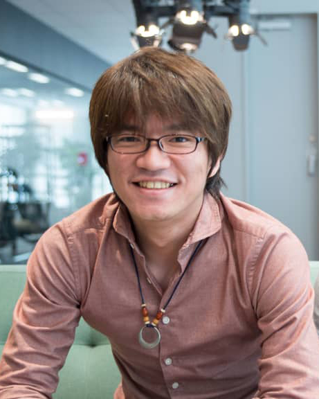 shota
Shota Nagayama
Personal website |
Google scholar |
Twitter
Research Associate Professor, Graduate school of Media and Governance, Keio University
Founder & Director, Quantum Internet Task Force
Board Member, WIDE Project
 satoh
satoh
Takahiko Satoh
Google scholar
Project Assistant Professor, Graduate School of Media and Governance
Board Member, Quantum Internet Task Force
 michal
michal
Michal Hajdušek
Google scholar
Project Assistant Professor, Graduate School of Media and Governance
Bernard Ousmane Sane Project Assistant Professor, Graduate School of Media and Governance
Google scholar
Doctoral Students
 Sara (D3)
Sara (D3) Home Page
whit3z(D3)
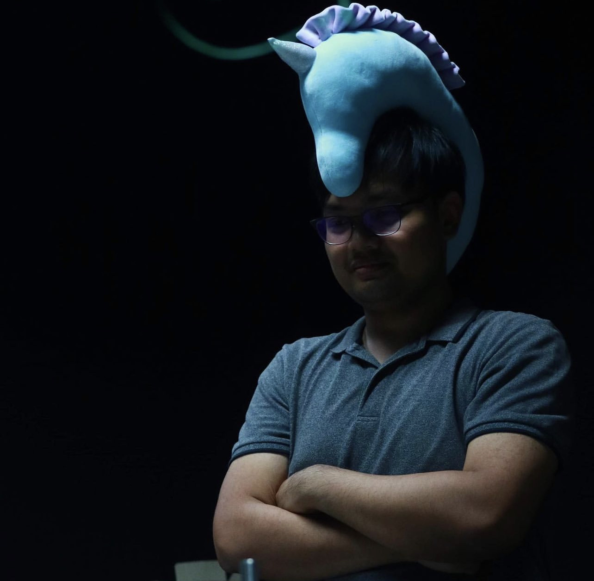 poramet(D1)
Master's Students
 cocori(M2)
cocori(M2)
 rum(M2)
rum(M2)
 sam(M2)
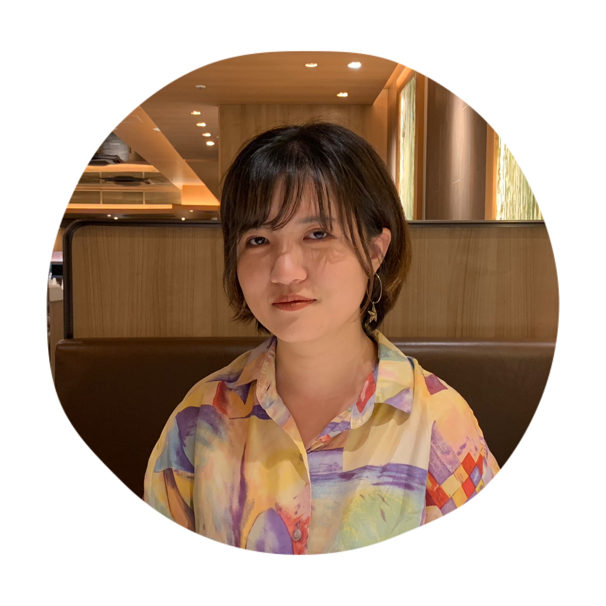
sitong(M2)
sam(M2)
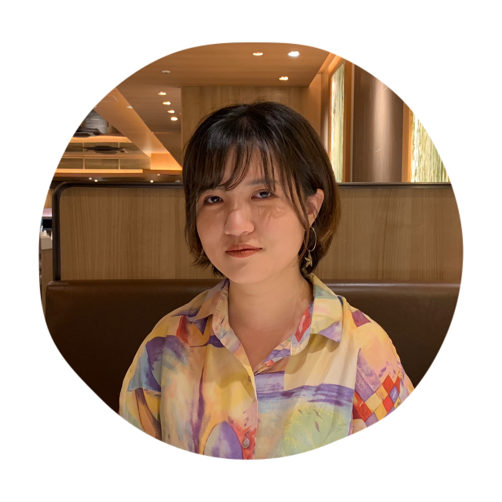
sitong(M2)
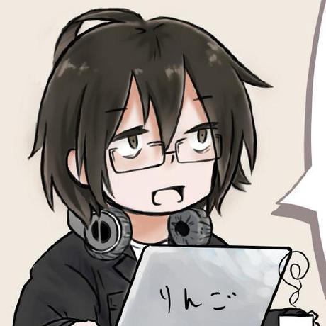 zigen(M2)
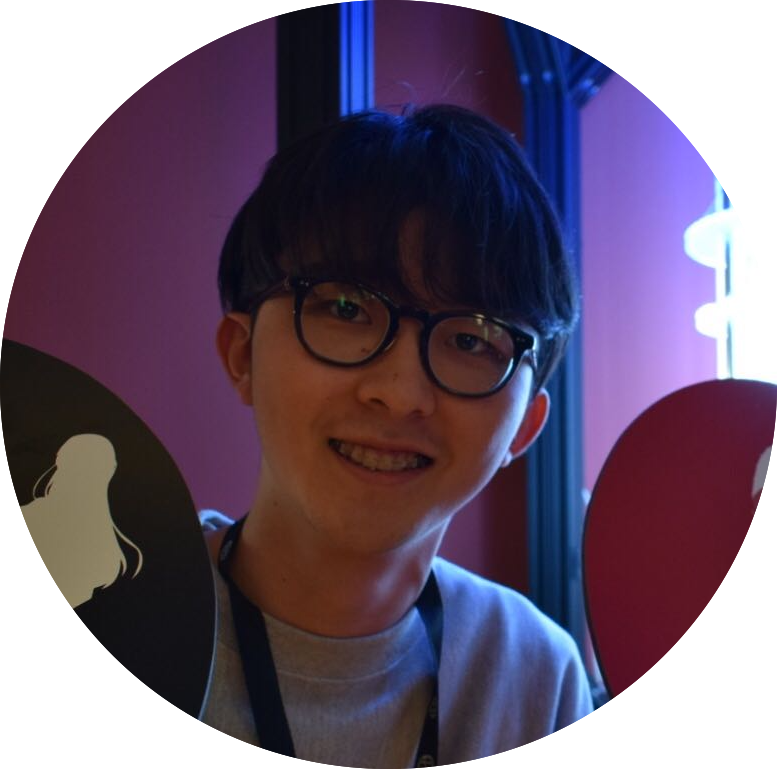 zomi(M1) dave(M1)
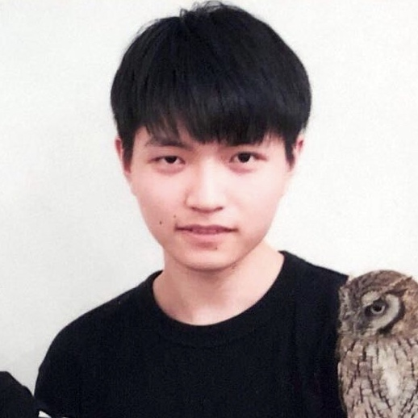 syu(M1)
Undergraduate
 shingy(B4)
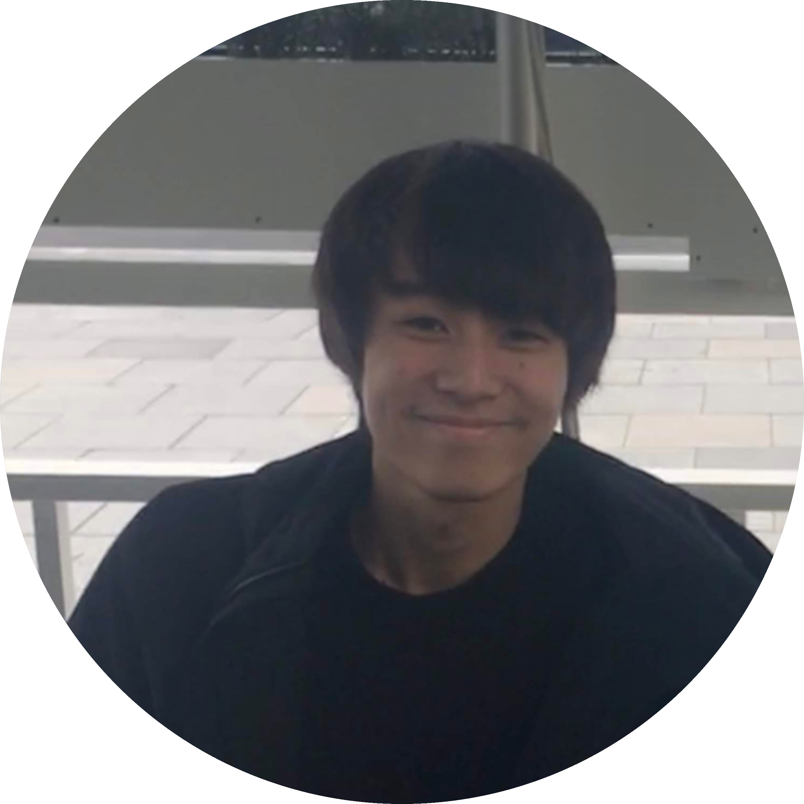
coscos(B4)
shingy(B4)
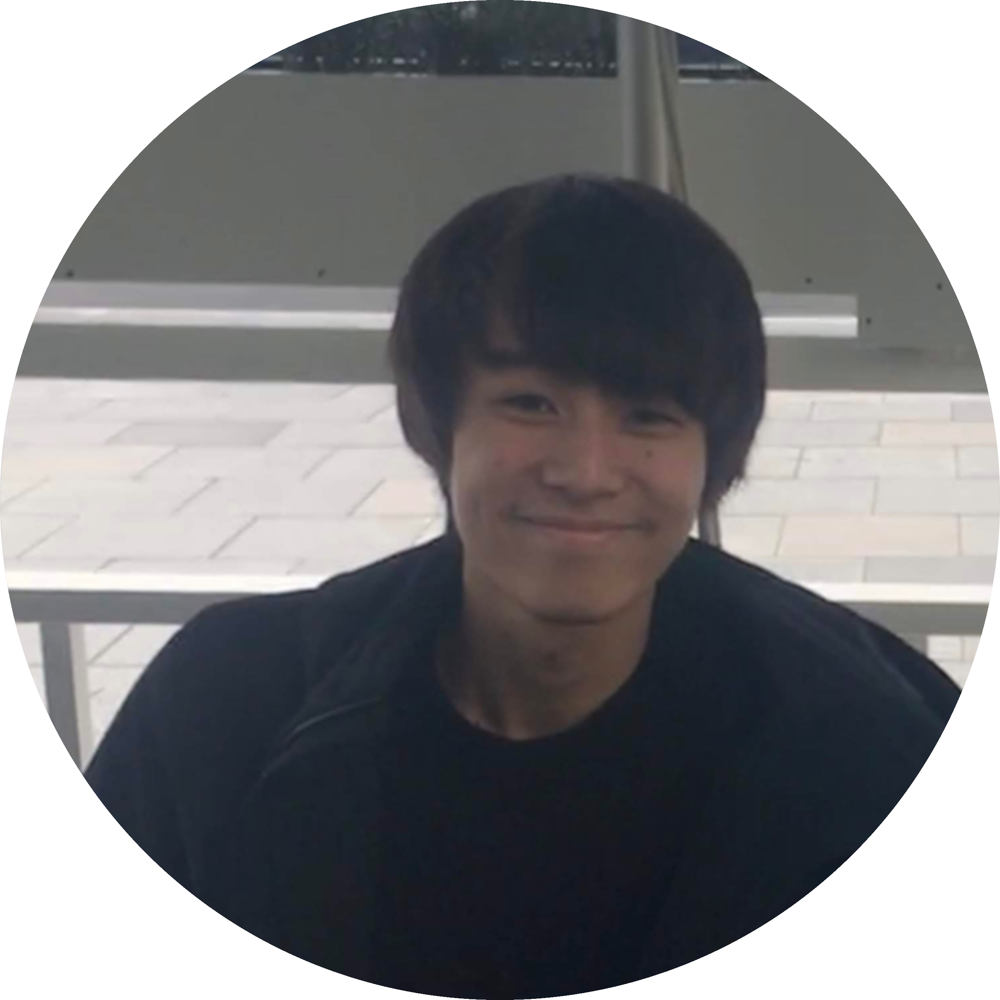
coscos(B4)
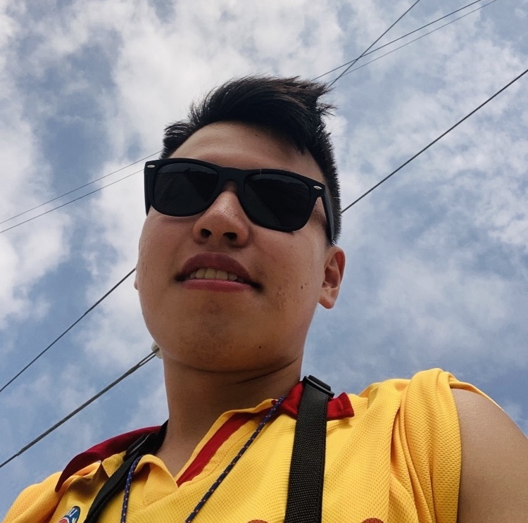 mason(B4)
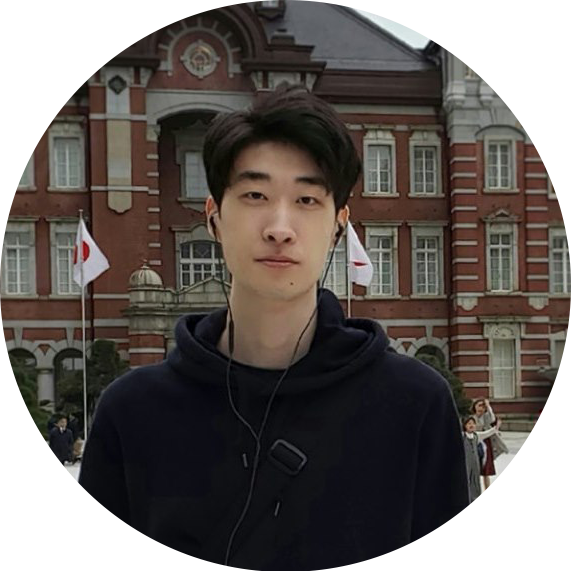 syui(B2)
 kent-tea(B2)
kent-tea(B2)
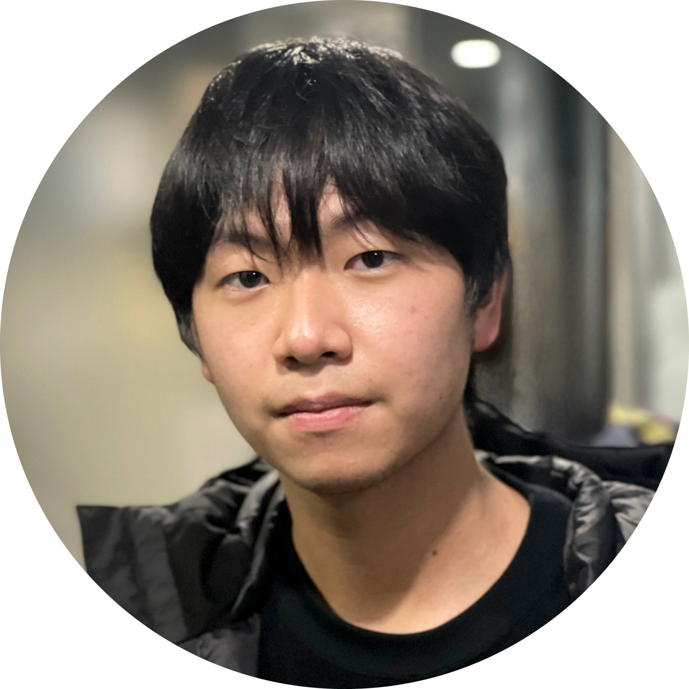 soon(B1)
Old Boys, Old Girls (Alumni)
 dawidth(B1)
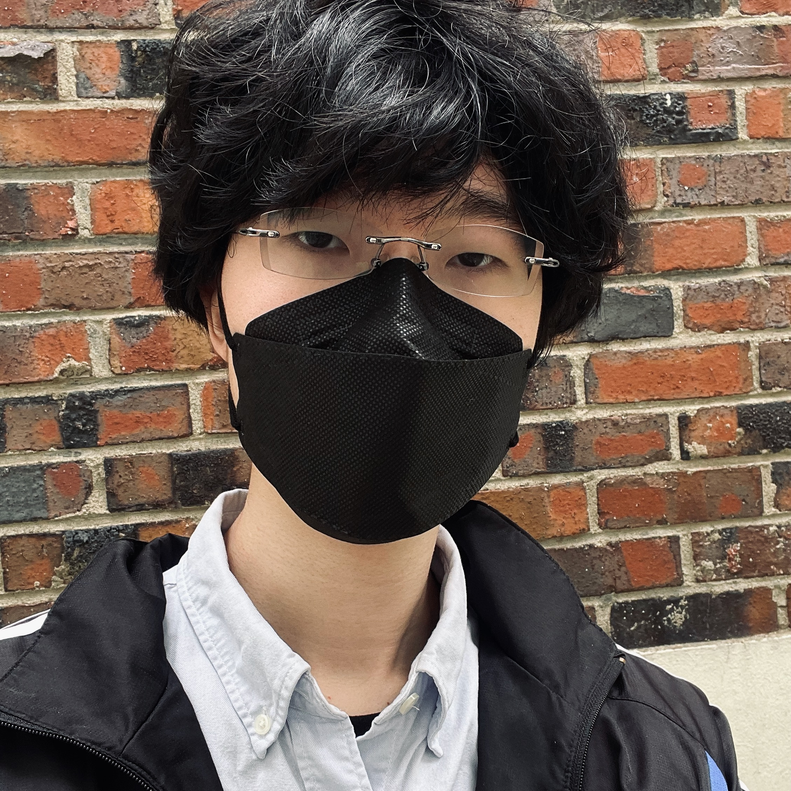
yuki(B1)
dawidth(B1)
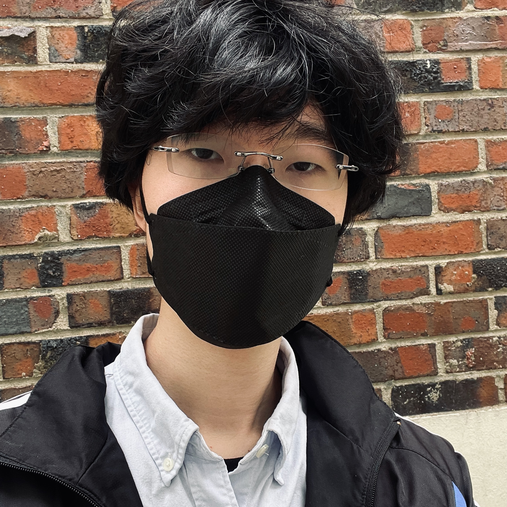
yuki(B1)
nora(-2021)
 voy(-2021)
voy(-2021)
 kuku(-2021)
kuku(-2021)
 tam(-2021)
tam(-2021)
 sakaue(-2021)
murdock(-2021)
sakaue(-2021)
murdock(-2021)
 martian(-2019)
martian(-2019)
 parton(-2020)
parton(-2020) kurosagi
kurosagi
 kaaki(-2019)
kaaki(-2019) sayyor(-2019)
sayyor(-2019)
 william(-2019)
william(-2019) chanou(-2018)
chanou(-2018)
 takafumi(-2017)
takafumi(-2017) yume(-2017)
yume(-2017)
 bays(-2017)
kaori(-2014)
fukuyama(-2013)
malt(-2013)
iomz(-2012)
bays(-2017)
kaori(-2014)
fukuyama(-2013)
malt(-2013)
iomz(-2012)QLEAP Education Project members
 Achmad Husni Thamrin (Project Associate Professor, Graduate school of Media and Governance, Keio University)
Achmad Husni Thamrin (Project Associate Professor, Graduate school of Media and Governance, Keio University)
 shori (D3)
shori (D3)